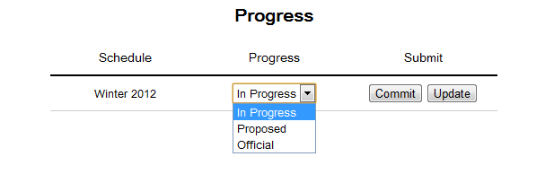

This section details the additional functionalities available to the administrator. A user may change the status of a schedule, save or load a schedule, use a schedule as a template for a new schedule, print a schedule view, or export the schedule to a file.
Once a user navigates to the Schedule Progress page, they are greeted with the following screen as seen in Figure 2.6.1.1.

Figure 2.6.1.1: The schedule status modification view
The user will see a list of existing schedules as well as the schedule's current Progress status. The progress can either be In Progress, Proposed, or Official. These three options are shown in a drop drop down as seen in Figure 2.6.1.1. An In Progress schedule is a schedule that is still being adjusted. A Proposed schedule indicates a schedule that has been sent to the adminstration to be accepted. After acceptance by the administration, the schedule may be set to Official. When any schedule's status is changed by the administrator, they can then click on Commit to save their change. Update pulls data from PeopleSoft and updates the existing course information.
This section will be updated for release 3c according to discussion in class on 11/18/11.
Once a schedule has been created the user has the ability to print the desired view of the schedule or export the schedule to PDF format or to a comma-delimited text file. If the user wishes to print a schedule, the user must first navigate to the appropriate schedule view (Schedule List View, Schedule Table View, Schedule Weekly View, Schedule Calendar View) After selecting the appropriate view the user clicks the Print button to send the file to the appropriate printer. In order for the user to export the schedule to either a PDF format or comma-delimited format the user opens the desired schedule and clicks the Export button. Once the user clicks the export button they are prompted with a text box to specify the name of the output file and also a drop-down menu to select the desired output (PDF or comma-delimited). Once the user clicks the OK button the file is saved under the appropriate name and destination specified by the user.